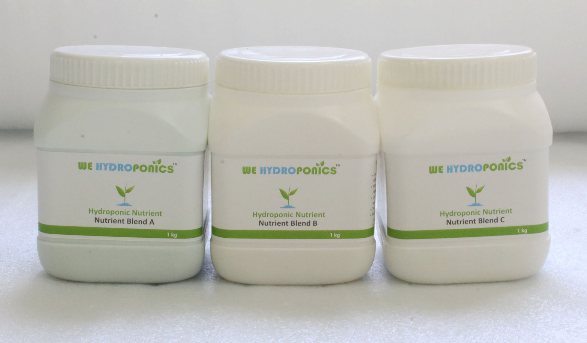

The word hydroponics technically means working with water, stemming from the Latin words “hydro” meaning water, and “ponos” meaning labor.In Hydroponics plant grows in water without using soil. As Plants grow through a process called photosynthesis, in which they use light and chlorophyll to convert carbon dioxide (a gas in the air) and water into glucose (a type of sugar) and oxygen. There’s no mention of “soil” anywhere in there—and that’s all the proof you need that plants can grow without it. What they do need is water and nutrients, both easily obtained from soil. But if they can get these things somewhere else—say, by standing with their roots in a nutrient-rich solution—they can do without soil altogether.
Plants basically need water, support, light (of particular wavelength) nutrients and appropriate environment to grow.In soil base culture soil provides support, water and nutrients to plant. In hydroponics support is provided with different growing medium and required nutrients are dissolved in water so roots can absorb nutrients from water it self.
->2.5 liters nutrient solution for leafy vegetable
->1.66 liters nutrient solution for fruit and flowring plants
->1.25 liters nutrient solution for Creepers and climbing crops